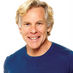
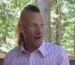

A former Ironman competitor and long-distance runner, with a biology degree. Runs the “Mark’s Daily Apple” blog and is the author of a number of books describing the ‘primal’ lifestyle, which ranges from how to sleep to how to barbecue your food. I admit to being very impressed by Mark. His research is impeccable, and he manages to provide clarity and balanced reviews of even the most controversial issues. Makes a living from what he espouses, sells products and books, so has a commercial stake in what he says. I admire a man that can outrun almost everybody, can cook with the best of them, writes books AND debunks medical literature. Highly recommended.
An actual UK family doctor (physician, GP etc) who loves his patients. Fights a brave war with UK institutions on their ‘heart healthy advice’ doled out by organizations beholden to the grain industry. Can be a bit wonky at times with posts on ‘grounding’ to leak electrons into the beach, but still an excellent read. Digs up great research, and he must be a godsend to his patients.

Author of the Gnoll Credo, a well known paleo book. His story “Eat like a predator, not like prey” nicely brings together a lot of the paleo mindset and what it is based on.
A specialist lipidologist. An expert on all matters of fat in the blood, perhaps one of the best. Believes that carbohydrates cause many issues with blood lipids, and standard bearer that “high cholesterol” is a nonsense diagnosis. Unlike some of the hardcore ‘low carbing solves everything’ people, he provides very detailed case studies on when what kind of medication is needed to treat a patient. Has commercial ties to lipid testing industry, speaker for big pharma. Still, he’s an indispensable authority and a great educator.
Dr Malhothra is a British cardiologist who thinks our current epidemic of obesity and diabetes (‘Diabesity’) can be prevented. Fights the old consensus with frequent articles in mainstream newspapers. Author of a recent and important paper in the British Medical Journal “The dietary advice on added sugar needs emergency surgery”
Canadian doctor, assistant professor at University of Ottawa, director of a weight loss institute. Prolific writer, antagonizes the food industry. Became famous when he got ‘disinvited’ to a food industry event when they found out his opinions. Instead, he put his presentation on YouTube where it got a quarter of a million views. Talks a lot about how our environment has become ‘obesogenic’, and how the food industry disingenuously works on keeping us fat. Has a broader view on obesity than many hardcore low-carbers. A force of good.
Jimmy is a great personal example of what one can achieve through the “new consensus”. Runs the prolific Living La Vida Lowcarb podcast, where he interviews the entire “who’s who” of the new consensus. Was so overweight that it might have killed him, which actually happened to his brother. Although he sometimes overstates his own knowledge, and his personal medical situation may make him a “special case”, one can’t help but admire his boundless energy. He’s a central point in the new consensus community.
A veterinarian! Peter is driven by the quest for knowledge. Fan of Kwaśniewski’s Optimal Diet, which helped him feel a lot younger and resolve health issues. Peter trawls through large amounts of research, and does a fine job debunking folks trying to tease ‘the old consensus’ out of modern research. Opinionated guy, sometimes overstates the case, but given how much he cares, that is to be understood. Has a gift for seeing non-obvious truths, like for example that “getting fat is good until you stop”. Feuds with Guyenet.